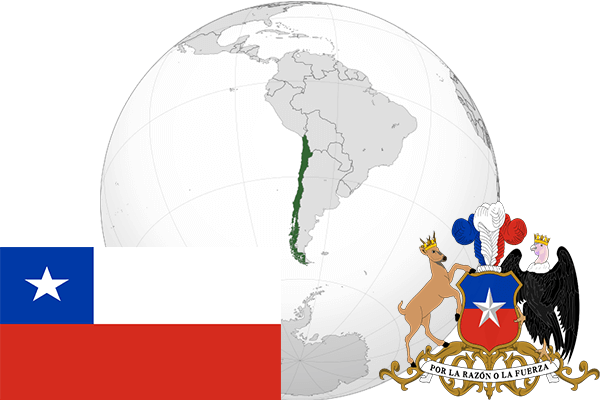

To`liq nomi: Chili Respublikasi
Region: Janubiy Amerikaning janubiy-sharqiy qismi
Qonunchilik shakli: Respublika
Mustaqillik kuni: 18-sentabr 1810 yil (Ispaniyadan)
Poytaxt: Santyago
Maydoni: 756 950 km² (dunyoda 37 -o`rinda )
Chegaradosh davlatlari: Peru, Boliviya, Argentina
Aholisi: 17 650 114 (dunyoda 64 -o`rinda, 2016 -yil roʻyxat)
Aholi zichligi: 22,81 /km²
Aholining o`rtacha yoshi: 77,05 yil ( 80,4 ayollar, 73,7 erkaklar)
Rasmiy tili: ispan tili
Dini: 80% katolik, 13% protestant
Pul birligi: Chili pesosi
Telefon prefiksi: +56
Internet domen: .cl
Xalqaro tashkilotlarga a`zoligi: BMT (1945 –yildan) Osiyo-Tinch okeani iqtisodiy hamkorlik tashkiloti
Dengiz va okeanlarga chiqishi: Tinch okeani
YIM: Butun: $ 281,4 mlrd, Jon boshiga: $ 16,31 (2011 - yil roʻyxati)
Yirik shaharlari: Santyago